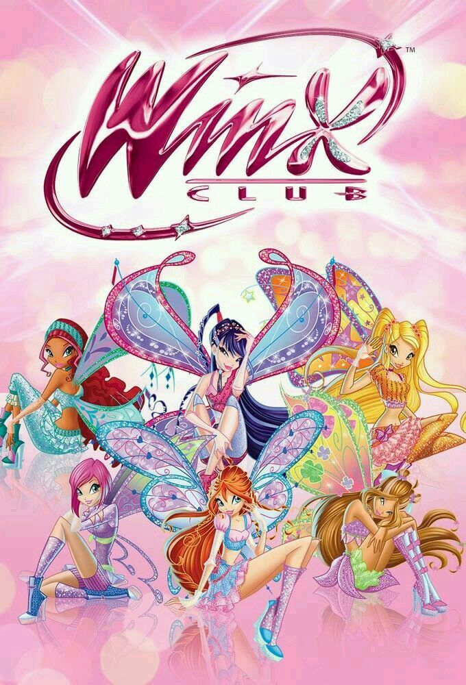

Conheça as Winx
As Winx são um grupo de jovens fadas que vivem aventuras mágicas, enfrentam desafios e mostram a importância da amizade, coragem e união.
Fotos em detaque ↓🧚♀️ Winx
As Winx são um grupo de jovens fadas que vivem aventuras mágicas, enfrentam desafios e mostram a importância da amizade, coragem e união.
Fotos em detaque ↓

A fada da Chama do Dragão.

A fada do Sol e da Lua.

A fada da natureza.

A fada da música.

A fada da tecnologia.

A fada das ondas e da água.